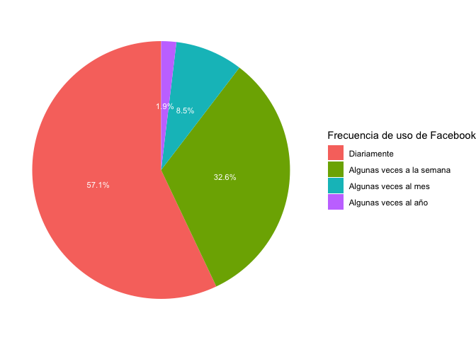

Introducción
En este documento vamos a seguir continuar usando el último informe regional “El pulso de la democracia”, disponible aquí, donde se presentan los principales hallazgos de la ronda 2018/19 del Barómetro de las Américas. Una de las secciones de este informe, reporta los datos sobre redes sociales y actitudes políticas. En esta sección, se presentan datos sobre el uso de internet y el uso de redes sociales, en general y por país. En este caso vamos a trabajar con la frecuencia de uso de las redes sociales. En este documento vamos a analizar descriptivamente estas variables sobre frecuencia de uso de redes sociales, variables de tipo ordinal (o de factor, en el lenguaje de R).
Sobre la base de datos
Los datos que vamos a usar deben citarse de la siguiente manera: Fuente: Barómetro de las Américas por el Proyecto de Opinión Pública de América Latina (LAPOP), wwww.LapopSurveys.org. Pueden descargar los datos de manera libre aquí. En este enlace, se pueden registrar o entrar como “Free User”. En el buscador, se puede ingresar el texto “2018”. Ahí se tendrá acceso a la base de datos completa “2018 LAPOP AmericasBarometer Merge_v1.0.dta” en versión para STATA. Se descarga la base de datos en formato zip, la que se descomprime en formato .dta. Una vez descargada y guardada en el directorio de trabajo, se tiene que leer la base de datos como un objeto dataframe en R. En este documento se carga una base de datos recortada. Esta base de datos se encuentra alojada en el repositorio “materials_edu” de la cuenta de LAPOP en GitHub. Mediante la librería rio y el comando import se puede importar esta base de datos desde este repositorio. Además, se seleccionan los datos de países con códigos menores o iguales a 35, es decir, se elimina las observaciones de Estados Unidos y Canadá.
library(rio)
lapop18 <- import("https://raw.github.com/lapop-central/materials_edu/main/LAPOP_AB_Merge_2018_v1.0.sav")
lapop18 <- subset(lapop18, pais<=35)
En el documento sobre estadística descriptiva, que se puede ver aquí, se trabajó con variables nominales, con opciones de respuesta dicotómica (Sí/No). En este documento se va a trabajar con variables ordinales. De esta manera, se va a usar la variable SMEDIA2.¿Con qué frecuencia ve contenido en Facebook?, SMEDIA5.¿Con qué frecuencia ve contenido en Twitter? y SMEDIA8.¿Con qué frecuencia usa Whatsapp? Estas variables tienen como opciones de respuesta:
- Diariamente
- Algunas veces a la semana
- Algunas veces al mes
- Algunas veces al año
- Nunca
Describir las variables
De la misma manera que con las variables nominales, estas variables tienen que ser declaradas como “factor” en nuevas variables.
lapop18$smedia2r = as.factor(lapop18$smedia2)
lapop18$smedia5r = as.factor(lapop18$smedia5)
lapop18$smedia8r = as.factor(lapop18$smedia8)
La nota a pie 15 indica que “los entrevistados que reportan nunca ver contenido en Facebook y Twitter, y quienes indican que nunca usan Whatsapp, son considerados como no usuarios de estas redes sociales” (p. 64). Por este motivo, el gráfico 3.3 de frecuencia de uso de redes sociales (pag. 57) solo incluyen las categorías “Diariamente”, “Algunas veces a la semana”, “Algunas veces al mes” y “Algunas veces al año”. Se excluya la categoría “Nunca”. En las nuevas variables vamos a declarar el valor 5, correspondiente a “nunca”, como “NA”, es decir, como valor perdido en R.
lapop18$smedia2r = car::recode(lapop18$smedia2r, "5=NA")
lapop18$smedia5r = car::recode(lapop18$smedia5r, "5=NA")
lapop18$smedia8r = car::recode(lapop18$smedia8r, "5=NA")
Luego, estas variables se tienen que etiquetar y generar las tablas descriptivas básicas, con el comando table.
levels(lapop18$smedia2r) <- c("Diariamente", "Algunas veces a la semana",
"Algunas veces al mes", "Algunas veces al año")
levels(lapop18$smedia5r) <- c("Diariamente", "Algunas veces a la semana",
"Algunas veces al mes", "Algunas veces al año")
levels(lapop18$smedia8r) <- c("Diariamente", "Algunas veces a la semana",
"Algunas veces al mes", "Algunas veces al año")
table(lapop18$smedia2r)
##
## Diariamente Algunas veces a la semana Algunas veces al mes
## 8633 4927 1286
## Algunas veces al año
## 282
table(lapop18$smedia5r)
##
## Diariamente Algunas veces a la semana Algunas veces al mes
## 795 728 422
## Algunas veces al año
## 193
table(lapop18$smedia8r)
##
## Diariamente Algunas veces a la semana Algunas veces al mes
## 14151 2646 495
## Algunas veces al año
## 50
Para calcular las tablas con porcentajes, redondeados a un decimal, usamos prop.table y round. Nuevamente, estos porcentajes no son exactamente iguales a los presentados en el reporte debido a que estos cálculos no incluyen el factor de expansión.
round(prop.table(table(lapop18$smedia2r)), 3)*100
##
## Diariamente Algunas veces a la semana Algunas veces al mes
## 57.1 32.6 8.5
## Algunas veces al año
## 1.9
round(prop.table(table(lapop18$smedia5r)), 3)*100
##
## Diariamente Algunas veces a la semana Algunas veces al mes
## 37.2 34.1 19.7
## Algunas veces al año
## 9.0
round(prop.table(table(lapop18$smedia8r)), 3)*100
##
## Diariamente Algunas veces a la semana Algunas veces al mes
## 81.6 15.3 2.9
## Algunas veces al año
## 0.3
Para presentar todos los datos en una tabla conjunta, se guarda la tabla de cada red social en un nuevo objeto de R (llamado como cada red social). Luego, todas estas tablas parciales, que contienen las mismas opciones de respuesta, se unen como filas con el comando rbind. Esta nueva tabla conjunta se guarda como un nuevo dataframe “tabla”.
Facebook <- round(prop.table(table(lapop18$smedia2r)), 3)*100
Twitter <- round(prop.table(table(lapop18$smedia5r)), 3)*100
Whatsapp <- round(prop.table(table(lapop18$smedia8r)), 3)*100
tabla <- as.data.frame(rbind(Facebook, Twitter, Whatsapp))
tabla
Para tener una mejor presentación de la tabla, se puede usar el comando kable del paquete knitr o el comando formattable del paquete del mismo nombre.
library(knitr)
kable(head(tabla), format="markdown", digits=1)
| Facebook |
57.1 |
32.6 |
8.5 |
1.9 |
| Twitter |
37.2 |
34.1 |
19.7 |
9.0 |
| Whatsapp |
81.6 |
15.3 |
2.9 |
0.3 |
library(formattable)
formattable(tabla)
|
|
Diariamente
|
Algunas veces a la semana
|
Algunas veces al mes
|
Algunas veces al año
|
|
Facebook
|
57.1
|
32.6
|
8.5
|
1.9
|
|
Twitter
|
37.2
|
34.1
|
19.7
|
9.0
|
|
Whatsapp
|
81.6
|
15.3
|
2.9
|
0.3
|
Para graficar, se replica el código usado en el documento anterior (que se puede ver aquí) para hacer la tabla resumen y el gráfico de pie. En este caso se trabajará con la variable de frecuencia de uso de Facebook (“smedia2r”). En primer lugar, se construye un dataframe “df” con la modalidad “pipe” (%>%) de la librería dplyr (parte del Tidyverse). Se declara el dataframe original con el que se trabajará (“lapop18”). Con el comando filter se le indique que internamente no tome en cuenta en los cálculos los valores perdidos de la variable “smedia2r”, usando la especificación !is.na(...). Se indica, luego, que se agrupen los resultados posteriores por categorías de la variable “smedia2r” con el comando group_by(...). En cada categoría se calcula el número de observaciones con el comando summarise(n=n()). Finalmente, con el número de observaciones por categoría, se calcula el porcentaje y se guarda en una nueva columna de “df”. Esto se calcula con el comando mutate, donde se especifica que la columna se llame “per” y se calcula el porcentaje redondeado.
library(dplyr)
df <- lapop18 %>%
filter(!is.na(smedia2r)) %>%
group_by(smedia2r) %>%
dplyr::summarise(n = n()) %>%
mutate(per=round(n/sum(n), 3)*100)
df
En segundo lugar, se activa la librería ggplot2 para graficar los datos guardados en “df” con el comando ggplot. Dentro de este comando se especifica que se trabajará con el dataframe “df” (no con lapop18) y se especifica la “estética”, es decir que en el eje X no se incluirá una variable, que en el eje Y se incluirá los datos de “per” del dataframe “df” y que se dividirá por categorías de la variable “smedia2r”. Luego se añade la capa geom_bar para indicar que se graficará en barras de ancho (width) 1 y que la barra replicará lo especificado en la estética (stat="identity"). Con geom_text se agrega las etiquetas de los datos y con coord_polar se transforma las barras en un gráfico circular de sectores. Finalmente, se define el “tema” con theme_void indicando un fondo blanco y se modifica la etiqueta de la leyenda con scale_fill_discrete.
library(ggplot2)
ggplot(data=df, aes(x="", y=per, fill=smedia2r))+
geom_bar(width=1, stat="identity")+
geom_text(aes(label=paste(per, "%", sep="")), color="white",
position=position_stack(vjust=0.5), size=3)+
coord_polar("y", start=0)+
theme_void()+
scale_fill_discrete(name="Frecuencia de uso de Facebook")

En el gráfico 3.3 del reporte “El Pulso de la Democracia” se presenta un gráfico circular tipo “donna”. Para reproducir exactamente este tipo de gráfico, se tiene que acomodar unos detalles de la sintaxis anterior. Se establece “x=2” en la “estética” y se establece límites en el eje X, entre 0.5 y 2.5, para que cuando se rote el eje, se cree el “hueco” dentro del círculo.
ggplot(data=df, aes(x=2, y=per, fill=smedia2r))+
geom_bar(stat="identity")+
geom_text(aes(label=paste(per, "%", sep="")), color="white",
position=position_stack(vjust=0.5), size=3)+
coord_polar("y")+
theme_void()+
scale_fill_discrete(name="Frecuencia de uso de Facebook")+
xlim(0.5, 2.5)

Para replicar el gráfico de barras, se hacen algunas modificaciones en el código anterior. Por ejemplo, en la “estética”, ahora se indica que en el eje X va la variable “smedia2r” y en el eje Y el porcentaje “per”. Se elimina, además, la especificación de las coordenadas polares. Se agrega un título al gráfico, etiquetas a los ejes y un caption con la especificación labs. Finalmente, se define el eje Y entre 0 y 60 con la especificación coord_cartesian. Un tema importante es que este gráfico también se puede guardar en un objeto en R, que llamaremos “graf1”.
graf1 <- ggplot(df, aes(x=smedia2r, y=per))+
geom_bar(stat="identity", width=0.5)+
geom_text(aes(label=paste(per, "%", sep="")), color="black", vjust=-0.5)+
labs(title="Frecuencia de uso de redes sociales", x="Frecuencia de uso de Facebook", y="Porcentaje", caption="Barómetro de las Américas por LAPOP, 2018/19")+
coord_cartesian(ylim=c(0, 60))
graf1

Guardar un gráfico en un objeto nos permite luego incorporar más capas o mejoras en el gráfico. El gráfico anterior, por ejemplo, tiene las etiquetas de “Frecuencia de uso” en una sola línea, por lo se podrían trasponer. Para mejorar esta visualización se puede inclinar estas etiquetas, pero si se quisiera mantener la horizontalidad para facilitar la lectura, lo que se puede hacer es separar las etiquetas largas en dos o más líneas. Esto se puede hacer, por ejemplo, creando un vector con las nuevas etiquetas. Las etiquetas largas se pueden partir en líneas mediante la inclusión de \n entre los textos que se quiera separar. Luego, al objeto “graf1” se le puede agregar una nueva capa para reemplazar las etiquetas con las nuevas divididas en líneas. Esto se hace con la especificación scale_x_discrete donde se indica que las etiquetas usen el vector creado.
etiq <- c("Diariamente", "Algunas veces\na la semana", "Algunas veces\nal mes",
"Algunas veces\nal año")
graf1 +
scale_x_discrete(labels=etiq)

De esta manera el gráfico queda más legible. Hasta aquí se ha replicado las tablas y gráficos que se usaron con las variables nominales, ahora usando variables ordinales. Si se quiere replicar el gráfico circular de las otras redes sociales, se puede calcular un nuevo dataframe como los datos de la otra red social. Para Twitter, por ejemplo, se tendría.
df2 <- lapop18 %>%
filter(!is.na(smedia5r)) %>%
group_by(smedia5r) %>%
dplyr::summarise(n = n()) %>%
mutate(per=round(n/sum(n), 3)*100)
df2
Podemos replicar el gráfico anterior, ahora usando el nuevo dataframe “df2”, con el código anterior.
graf2 <- ggplot(df2, aes(x=smedia5r, y=per))+
geom_bar(stat="identity", width=0.5)+
geom_text(aes(label=paste(per, "%", sep="")), color="black", vjust=-0.5)+
labs(title="Frecuencia de uso de redes sociales", x="Frecuencia de uso de Twitter", y="Porcentaje", caption="Barómetro de las Américas por LAPOP, 2018/19")+
coord_cartesian(ylim=c(0, 50))+
scale_x_discrete(labels=etiq)
graf2

La pequeña diferencia entre los porcentajes puede deberse a que en todos las tablas y gráficos anteriores no se incluye el factor de expansión. Si se incluyera, usando la variable “weight1500”, se tendría porcentajes que difieren solo por la aproximación decimal.
descr::freq(lapop18$smedia5r, lapop18$weight1500, plot=F)
## lapop18$smedia5r
## Frequency Percent Valid Percent
## Diariamente 770.2 2.8524 37.300
## Algunas veces a la semana 701.4 2.5979 33.971
## Algunas veces al mes 406.4 1.5053 19.684
## Algunas veces al año 186.8 0.6917 9.045
## NA's 24935.2 92.3527
## Total 27000.0 100.0000 100.000
Estas tablas también se pueden guardar en objetos y crear un dataframe con estos datos que incluyen el factor de expansión y luego crear gráficos que reproduzcan los porcentajes del reporte tal cual.
Cruce de variables
En la tabla 3.1 (pag. 55) del reporte “El pulso de la democracia” se presenta los porcentajes de uso de las redes sociales por país. Para replicar esta tabla primero se tiene que definir la variable “pais” y las variables de uso de redes sociales (smedia1, smedia4 y smedia7). Luego, en la página 56 se presenta un cuadro con el porcentaje de usuarios de redes sociales por características sociodemográficas, por ejemplo, urbano/rural, hombre, edad promedio, riqueza promedio y años de estudio. Empezaremos replicando los datos generales del uso de redes sociales que se reporta en el gráfico 3.1.
lapop18$smedia1r = as.factor(lapop18$smedia1)
lapop18$smedia4r = as.factor(lapop18$smedia4)
lapop18$smedia7r = as.factor(lapop18$smedia7)
levels(lapop18$smedia1r) <- c("Sí", "No")
levels(lapop18$smedia4r) <- c("Sí", "No")
levels(lapop18$smedia7r) <- c("Sí", "No")
lapop18$pais = as.factor(lapop18$pais)
levels(lapop18$pais) <- c("México", "Guatemala", "El Salvador", "Honduras",
"Nicaragua","Costa Rica", "Panamá", "Colombia",
"Ecuador", "Bolivia", "Perú", "Paraguay",
"Chile", "Uruguay", "Brasil", "Argentina",
"Rep. Dom.", "Jamaica")
table(lapop18$pais) #País
##
## México Guatemala El Salvador Honduras Nicaragua Costa Rica
## 1580 1596 1511 1560 1547 1501
## Panamá Colombia Ecuador Bolivia Perú Paraguay
## 1559 1663 1533 1682 1521 1515
## Chile Uruguay Brasil Argentina Rep. Dom. Jamaica
## 1638 1581 1498 1528 1516 1513
table(lapop18$smedia1r) #Facebook
##
## Sí No
## 15389 11573
table(lapop18$smedia4r) #Twitter
##
## Sí No
## 2363 24558
table(lapop18$smedia7r) #Whatsapp
##
## Sí No
## 17446 9569
Sin embargo, la variable “usuario” de cada red social se calcula como condición de dos variables, como se vio en el documento sobre manejo de datos, con el siguiente código.
lapop18$fb_user <- ifelse(lapop18$smedia1==1 & lapop18$smedia2<=4, 1, 0)
lapop18$tw_user <- ifelse(lapop18$smedia4==1 & lapop18$smedia5<=4, 1, 0)
lapop18$wa_user <- ifelse(lapop18$smedia7==1 & lapop18$smedia8<=4, 1, 0)
Esta variables son graficadas en el reporte en el Gráfico 3.1. Para reproducir estos datos, se puede describir estas variables.
prop.table(table(lapop18$fb_user))*100
##
## 0 1
## 43.8289 56.1711
prop.table(table(lapop18$tw_user))*100
##
## 0 1
## 92.056769 7.943231
prop.table(table(lapop18$wa_user))*100
##
## 0 1
## 35.76561 64.23439
Las diferencias entre estos porcentajes y los que aparecen en el reporte son debido a que no se incluye el factor de expansión. Para incluirlo se puede usar el comando freq de la librería descr que permite incluir la variable “weight1500”.
library(descr)
descr::freq(lapop18$fb_user, lapop18$weight1500, plot=F)
## lapop18$fb_user
## Frequency Percent Valid Percent
## 0 11337 41.988 43.77
## 1 14564 53.939 56.23
## NA's 1100 4.073
## Total 27000 100.000 100.00
descr::freq(lapop18$tw_user, lapop18$weight1500, plot=F)
## lapop18$tw_user
## Frequency Percent Valid Percent
## 0 23819 88.220 92.023
## 1 2065 7.647 7.977
## NA's 1116 4.133
## Total 27000 100.000 100.000
descr::freq(lapop18$wa_user, lapop18$weight1500, plot=F)
## lapop18$wa_user
## Frequency Percent Valid Percent
## 0 9252 34.266 35.63
## 1 16714 61.903 64.37
## NA's 1035 3.832
## Total 27000 100.000 100.00
Para replicar el cuadro de uso de redes sociales por país, primero, se crean las tablas bivariadas entre cada red social y país. Estas tablas presentan el porcentaje de quienes usan y el porcentaje de los que no usan cada red social en cada país. Estas tablas se guardan en objetos de R. Luego se unen estos objetos usando los comandos cbind para juntar las columnas y as.data.frame para unir las tablas como un dataframe. Esta tabla presenta también los porcentajes de los que No usan estas redes sociales. Para presentar una tabla que incluya solo a los que sí usan las redes sociales, se eliminan estas columnas, usando la especificación [, c(-1,-3,-5)], que indica que no se eliminan filas y que sí se eliminen las columnas 1, 3 y 5.Finalmente, se cambia el nombre de las columnas del dataframe.
fbpais <- round(prop.table(table(lapop18$pais, lapop18$fb_user), 1), 3)*100
twpais <- round(prop.table(table(lapop18$pais, lapop18$tw_user), 1), 3)*100
whpais <- round(prop.table(table(lapop18$pais, lapop18$wa_user), 1), 3)*100
tablapais <- as.data.frame(cbind(fbpais, twpais, whpais))
tablapais <- tablapais[, c(-1,-3,-5)]
varnames <- c("Usa Facebook", "Usa Twitter", "Usa Whatsapp")
colnames(tablapais) <- varnames
tablapais
Para tener una mejor presentación de la tabla se tienen dos alternativas: la primera con la librería knitr y la otra con la librería formattable.
library(knitr)
kable(head(tablapais), format="markdown", digits=1)
| México |
47.9 |
7.6 |
55.1 |
| Guatemala |
43.2 |
6.5 |
47.6 |
| El Salvador |
56.2 |
6.7 |
56.0 |
| Honduras |
44.6 |
4.8 |
46.9 |
| Nicaragua |
48.1 |
5.8 |
47.7 |
| Costa Rica |
66.6 |
8.0 |
81.6 |
library(formattable)
formattable(tablapais)
|
|
Usa Facebook
|
Usa Twitter
|
Usa Whatsapp
|
|
México
|
47.9
|
7.6
|
55.1
|
|
Guatemala
|
43.2
|
6.5
|
47.6
|
|
El Salvador
|
56.2
|
6.7
|
56.0
|
|
Honduras
|
44.6
|
4.8
|
46.9
|
|
Nicaragua
|
48.1
|
5.8
|
47.7
|
|
Costa Rica
|
66.6
|
8.0
|
81.6
|
|
Panamá
|
34.6
|
5.8
|
56.7
|
|
Colombia
|
60.0
|
10.7
|
63.5
|
|
Ecuador
|
66.9
|
11.2
|
60.2
|
|
Bolivia
|
57.9
|
5.6
|
63.5
|
|
Perú
|
61.4
|
7.6
|
58.6
|
|
Paraguay
|
60.5
|
8.0
|
69.2
|
|
Chile
|
62.9
|
9.2
|
75.5
|
|
Uruguay
|
66.5
|
9.8
|
80.0
|
|
Brasil
|
59.2
|
7.9
|
74.9
|
|
Argentina
|
67.3
|
12.9
|
78.9
|
|
Rep. Dom.
|
61.9
|
9.5
|
68.2
|
|
Jamaica
|
45.9
|
4.5
|
68.1
|
Cruce con variables sociodemográficas
En la página 56 del reporte “El pulso de la democracia” se presenta los resultados del cruce entre las variables uso de redes sociales y variables sociodemográficas como urbano/rural, sexo, edad, riqueza y años de educación. La variable “q1” registra el género del entrevistado. Esta variable está codificada de la siguiente manera:
- Hombre
- Mujer
Para construir una variable “dummy” llamada “hombre”, de tal manera que hombre sea 1 y mujer sea 0, una forma de hacerlo es de manera algebraica (2-variable q1). De esta manera, ahora los hombres mantiene el valor 1 (2-1) y las mujeres pasar a ser 0 (2-2). En este caso, la nueva variable “hombre” se crea como una una variable numérica. Vamos a manterner a la variable como “num” para, más abajo, poder calcular la media de esta variable (cosa que no se puede hacer de una variable declarada como factor).
lapop18$hombre <- 2-lapop18$q1
table(lapop18$hombre)
##
## 0 1
## 14084 13943
La variable urbano/rural se llama “ur” en la base de datos y está codificada de la siguiente manera:
- Urbano
- Rural
De la misma manera que con género, se usa la fórmula 2- variable ur, pero esta variable se convierte en factor y se etiqueta.
lapop18$urban <- 2-lapop18$ur
lapop18$urban = as.factor(lapop18$urban)
levels(lapop18$urban) <- c("Rural", "Urbano")
table(lapop18$urban)
##
## Rural Urbano
## 8089 19953
Se presentará las tablas cruzadas del uso de redes sociales por alguno de las variable sociodemográficas, para entender mejor cómo se construye la tabla general. Por ejemplo, el reporte muestra en la Tabla 3.2, luego de la columna de población general, las columnas para usuarios y no usuarios de Whatsapp (variable “wa_user”) y en las filas, la primera corresponde a urbano (variable “urban”, donde 0 es rural y 1 urbano). Se presenta que entre los usuarios de Whatsapp, el 76.7% son urbanos y entre los no usuarios, el 62% son urbanos. Estos datos se generan con el comando table que permite hacer una tabla de contingencia de 2 variables. En este caso se tiene que notar que cada variable tiene un título. De esta manera el comando es table(título1 = var1, título2 = var2). Luego, se usa el comando prop.table para que no se muestre las observaciones, sino los porcentajes. Este comando permite calcular los porcentajes sobre el total (la opción por defecto), sobre las filas y sobre las columnas. Para calcular sobre las columnas se debe especificar prop.table(table(...), 2). Si se quisiera el porcentaje sobre las filas, el código sería prop.table(table(...), 1). Esta tabla se pueden guardar como un dataframe con el comando as.data.frame en un nuevo objeto “t1”.
t1 <- as.data.frame(round(prop.table(table(Urbano = lapop18$urban, Usuario = lapop18$wa_user), 2)*100, 1))
t1
La filas correspondientes a “Urbano” de esta tabla reproducen los datos de la Tabla 3.2: 62.1% son urbanos entre los no usuarios de Whatsapp y 76.7% son urbanos entre los usuarios.
Ahora se presentará la tabla entre usuarios de Facebook (variable “fb_user”) y hombre (variable “hombre”), pero presentando solo los porcentajes usados en la tabla y ahora usando el estilo de código del Tidyverse, usando el operador “pipe”. Lo primero es definir la variable “fb_user” como un factor y etiquetarla. Luego, se usa el comando subset para filtrar los casos perdidos en la variable “fb_user”. Luego se pide que los resultados se agrupen por categorías de la variable “fb_user”. Con el comando summarise se guarda en la columna “hombre” el promedio de la variable “hombre”, con el comando mean que incluye la especificación na.rm=T para no incluir en el cálculo los valores perdidos. En este caso se aprovecha que la variable “hombre” es una variable dummy, de tal manera que el promedio corresponde a la proporción de hombres.
lapop18$fb_user = as.factor(lapop18$fb_user)
levels(lapop18$fb_user) <- c("No usuario", "Usuario")
tabla1 <- subset(lapop18, !is.na(fb_user)) %>% #Para no incluir al grupo de NA de usuarios de Facebook
group_by(fb_user) %>%
dplyr::summarise(Hombre=mean(hombre, na.rm=T)*100) #Se incluye na.rm=T porque hombre tiene NAs
tabla1
Estos son los porcentajes para los usuarios de Facebook, en la fila de la variable Hombre de la Tabla 3.2. Es decir, entre los no usuarios, 49.9% son hombres y entre los usuarios este porcentaje es 49.7%.
Gráfico de barras de dos variables
Elcruce entre usuarios de Whatsapp y la variable urbano se puede ver mejor en un gráfico de barras agrupadas. Lo primero que haremos es definir la variable “wa_user” como factor y etiquetarla. Luego, se requiere crear una tabla con los datos agrupados. Se puede usar el dataframe “t1” creado anteriormente, pero aquí usaremos nuevamente el operador “pipe” para recrear los datos. Para esto, se agrupa tanto por uso de Whatsapp como por urbano/rural, es decir, en cuatro combinaciones. En cada subgrupo se calcula el n. Dado que los % se tienen que calcular por cada grupo de “wa_user”, se vuelve a agrupar y se calcula los % de cada subgrupo, de tal manera que los porcentajes sumen 100% en cada subgrupo de “wa_user”.
lapop18$wa_user = as.factor(lapop18$wa_user)
levels(lapop18$wa_user) <- c("No usuario", "Usuario")
face <- subset(lapop18, !is.na(wa_user)) %>% #Se usa !is.na para que no se reporte los NA en la tabla
group_by(wa_user, urban) %>% #Se configuran los grupos
dplyr::count() %>% #Se calcula el n
group_by(wa_user) %>% #Se agrupa por usuario de Whatsapp
dplyr::mutate(porcentaje = round(n/sum(n), 3)*100) #Se calcula el porcentaje en cada grupo de Whatsapp
face
Los datos se esta nueva tabla son exactamente iguales a los de “t1”. Con la tabla lista, se usa el comando ggplot definiendo que “wa_user” sea la variable en el eje X, que el eje Y sea el porcentaje y que los subgrupos se formen por la variable “urban” con la especificación fill. Se usa la especificación dodge en geom_bar para tener las barras separadas por cada grupo.
ggplot(data=face, aes(x=wa_user, y=porcentaje, fill=urban, ymax=100))+
geom_bar(position="dodge", stat="identity")+
geom_text(aes(label=paste(porcentaje, "%", sep="")),
position=position_dodge(width=0.9), vjust=-0.25)+
ylab("Porcentaje")+
xlab("Usuario de Whatsapp")

Si quisiéramos hacer el gráfico con barras apiladas, se tiene que cambiar la especificación de position="stack" en geom_bar y la especificación position=position_stack() de geom_text.
ggplot(data=face, aes(x=wa_user, y=porcentaje, fill=urban, ymax=100))+
geom_bar(position="stack", stat="identity")+
geom_text(aes(label=paste(porcentaje, "%", sep="")),
position=position_stack(), vjust=2.5)+
ylab("Porcentaje")+
xlab("Usuario de Whatsapp")

En ambos casos las barras celestes indican los porcentajes reportados en la tabla 3.2 del reporte y corresponden a la proporción de personas que viven en el ámbito urbano entre los usuarios y los no usuarios.
Resumen
En este documento se ha trabajado con variable categóricas ordinales, como la frecuencia de uso de redes sociales. También se ha introducido al uso de tablas de contingencia de dos variables categóricas y la creación de gráficos de barras agrupadas para 2 variables.
